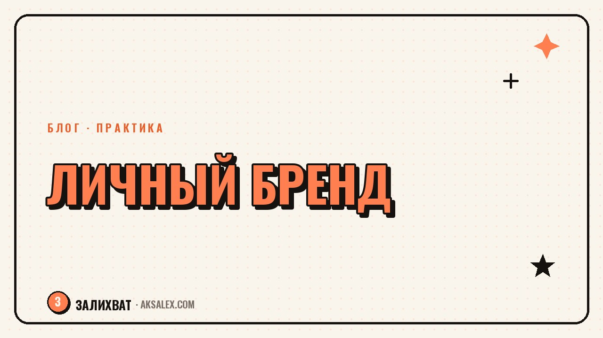

Личный бренд в блоге: с чего начать без пафоса

Слово 'личный бренд' у многих вызывает смесь интереса и неловкости: с одной стороны хочется, чтобы тебя узнавали и звали на проекты, с другой - страшно превратиться в человека, который в каждом посте продаёт себя. Разница между работающим личным брендом и пафосной витриной не в количестве подписчиков, а в том, из чего он собран. Разберём, с чего начинать, чтобы бренд получился узнаваемым, а не неловким.
Что такое личный бренд и чем он не является
Личный бренд - это не логотип и не слоган про успешный успех. Это то, за что тебя узнают и к чему обращаются, когда возникает конкретная задача: 'спроси у неё, она разбирается в детском питании' или 'он объясняет сложные вещи понятно'. Бренд строится на повторяющемся опыте людей с тобой, а не на заявлениях о себе.
Пафос начинается там, где заявления обгоняют реальный опыт: человек называет себя экспертом раньше, чем у него накопилась практика, которая это подтверждает. Аудитория такое чувствует почти сразу, даже если не формулирует вслух.
Личный бренд точно не это
- Не постоянные рассказы о своих победах без контекста и пользы для читателя
- Не единый отполированный образ без единой слабости или сомнения
- Не копия стиля успешного блогера из смежной ниши
- Не красивая фраза о миссии без конкретных дел за ней
С чего начинать: ядро бренда
Прежде чем думать об оформлении и подаче, стоит честно ответить на вопрос: в чём именно твоя польза для человека, который тебя читает. Не 'я вдохновляю', а конкретика - чему человек научится, что поймёт, что сможет сделать после твоего контента.
Упражнение на ядро
- Выпиши три темы, в которых тебя чаще всего спрашивают совета в жизни
- Для каждой отметь, есть ли у тебя не только интерес, а реальный опыт или результат
- Сформулируй одной фразой, что человек получает после общения с тобой на эту тему
- Проверь фразу на друге: звучит ли она конкретно или как общие слова про развитие
Как не скатиться в пафос
Пафос в блоге почти всегда растёт из страха показаться недостаточно убедительным. Чем меньше реальных примеров, тем громче формулировки. Лечится это не скромностью напоказ, а конкретикой вместо лозунгов.
| Пафосный подход | Живой подход |
|---|---|
| 'Я помогаю людям раскрыть потенциал' | 'Помогаю разобрать три конкретных ошибки в резюме' |
| Только истории успеха без деталей | Истории с цифрами, сроками и тем, что не получилось сразу |
| Общие фразы про миссию и путь | Конкретный пример из практики на этой неделе |
| Полная уверенность в каждом посте | Честное 'не уверен, но вот как я решил бы' |
Голос и стиль без наигранности
Узнаваемость часто путают с яркостью подачи, хотя на деле она строится на последовательности. Если ты сегодня пишешь строго и по делу, а завтра резко переходишь на подростковый сленг, аудитория не успевает понять, кто ты на самом деле.
Один автор с десятилетним опытом в блогинге говорит так: 'Личный бренд - это не то, как громко ты говоришь, а то, звучишь ли ты одинаково, когда у тебя 50 подписчиков и когда их 50 тысяч'.
Самый надёжный способ найти свой голос - писать так, как ты говоришь с умным собеседником, которого уважаешь, а не так, как, по твоему мнению, должен говорить эксперт.
Частые ошибки новичков
Большинство ошибок на старте связаны не с недостатком знаний, а с нетерпением - хочется получить результат бренда раньше, чем накопится материал, который его подтверждает.
- Называть себя экспертом до того, как есть истории с результатом
- Менять тему и подачу каждую неделю в поиске того, что 'зайдёт'
- Копировать чужие формулировки вместо поиска своих слов
- Избегать любых упоминаний о сложностях, будто их не было
План на первый месяц
Личный бренд не строится за неделю, но первый месяц можно провести осмысленно, а не хаотично.
- Неделя 1: сформулируй ядро бренда по упражнению выше и проверь на знакомых
- Неделя 2: напиши три поста с конкретными примерами из своей практики
- Неделя 3: собери обратную связь - какие формулировки откликаются, какие проходят незамеченными
- Неделя 4: убери из своих текстов общие фразы, которые не прошли проверку на конкретику
Частые вопросы
С чего начать строить личный бренд в блоге новичку?
С честного ответа, в чём твоя конкретная польза для читателя, а не с оформления и визуала. Сначала ядро - потом подача, а не наоборот.
Как понять, что блог скатился в пафос?
Главный признак - формулировки звучат громче, чем стоящий за ними реальный опыт. Если в постах почти нет конкретных примеров и цифр, а только общие фразы про рост и успех - это пафос.
Нужно ли называть себя экспертом, чтобы бренд работал?
Нет, доверие строится на повторяющемся опыте читателей с твоим контентом, а не на слове 'эксперт' в описании профиля. Часто честное 'разбираюсь в этой теме' звучит убедительнее.
Можно ли менять тему блога, если личный бренд уже начал строиться?
Можно, но резкая смена темы без объяснения сбивает узнаваемость, которая уже накопилась. Лучше явно рассказать читателям, почему меняешь направление и что остаётся прежним в подаче.
Сколько времени нужно, чтобы личный бренд в блоге стал заметным?
Срок сильно зависит от регулярности и ниши, но первые устойчивые признаки - когда читатели сами начинают пересказывать твои мысли своими словами - обычно появляются не раньше нескольких месяцев стабильной работы.
Раз тема оказалась полезной, вот что почитать следующим. Разбираем страх возврата в найм после провала своего дела - и как заранее снизить этот риск.
Читать статью →а не вручную